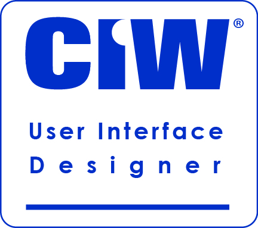
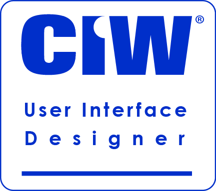

ABOUT ME
I grew up in southeast Michigan, but moved to Washington in high school and instantly fell in love with the Pacific Northwest.
I have always been passionate about technology (I vividly remember the day my family got Internet as one of the greatest days in history), but I wasn't initially confident in my ability to pursue it as a career.
I worked many years in retail management, where I honed my interpersonal and customer service skills to an expert level.
During this time, I earned my Associate in Arts. In 2017, I transitioned from brick and morter retail to e-commerce, where I worked with product designers on projects,
and served as a web coordinator. It was during this time that my interest in tech was heightened and I made the decision to pursue it as a career.
I earned my Bachelor of Information Technology, and obtained several professional certifications in the process. In 2021, I became a parent and
took a career break to care for my daughter full time. I continue to practice and build my skills in my free time.
Other free time activities include yoga, video games, and Dungeons & Dragons (DM here!).
I am incredibly eager to learn and gain experience, and I can't wait to bring my unique blend of soft skills and technical knowledge to your table.
EDUCATION
Bachelor of Information Technology
Western Governors University
July 2019 - January 2023
Associate in Arts
Olympic College
September 2014 - August 2016
CERTIFICATIONS


 


EXPERIENCE
Good Smile Connect, Los Angeles, CA (Remote) | August 2021 - May 2022
Web Coordinator- General site administration, including adding new products, making necessary updates to products, removing products when they retired, updating quantities based on third party inventories, etc.
- Ensured SEO through the use of relevant keywords and product descriptions
- Entered product data into inventory management system (SkuVault)
For Fans By Fans, Los Angeles, CA (Remote) | Sep 2017 - Aug 2021
Artist Community Coordinator- Corresponded with and recruited artists via email and social media
- Collected and managed artist data in Excel, Google Sheets, and OpenCart database
TJ Maxx, Silverdale, WA | Sep 2008 - Sep 2017
Merchandise Coordinator, 2013 - 2017Administrative Coordinator, 2011 - 2013
Customer Service Coordinator, 2008 - 2011